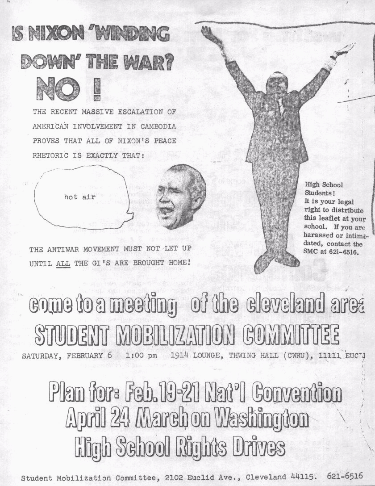

turning road blues
turning road blues
in time to the
sleeping bags
stretched about the sides
walk and wake and find
yes; once more
the mood
you have come to know
my name forever
you have to but wait in this
stay of time with me
till we've gone
all each one man’s
way
need not say good-bye
as it is yet again
the turning road
one car for you
one for me
about this world - that we
still live - again we'll meet.
- jude
It was 1971. If I had grown up in Europe then it would have been expected for me to go out onto the road and travel before I thought to settle down. But this was the USA a land of paranoid children dreaming only of gold. Souls are sold cheep here. So, going on the road was dangerous, as one mirrored freedom and fear with every extended thumb. There was a civil rights civil war going on. And yet there were so few involved. Though the Mothers were just beginning to see and so new marches on Washington D.C. were being planned.
Standing on the edge, I remembered the Summer of 1970. Just 18 years old but feeling much older. I had the soul of a Poet and a taste for politics. My poetry was still primitive and I kept it so in order to find a unique voice. A voice that might even be heard in an empty forest. Yes, if a tree falls! But I had not written a love poem for too many months. It felt as if all the battles of my political world would forever keep me sidetracked from the normal life I had once dreamed of. They had tried to break me. Even when I was 16 they broke laws and their own ethics, trying to force me to relent.
It was war and God was on our side or so they cried. But they taught me too well. To break me, they did forsake me. I seemed to stand too alone with my long hair growing. I stood alone knowing, with all my dreams shattered and scattered across the streets of my teenage screams.
I stood on the corner of Freshpond Rd and 78th Ave, New York City. I stood within the eternal second of a lost paradise. I stood looking for my fingerprints. And I stood smiling at the beauty of a memory all too real. Silly man, and I then walked on knowing I didn’t belong. I walked from the Atlantic ocean to Harlem and back again. As long as I kept walking those long nights away, I had a place to belong. It was hard to stop for too long. No home left for the child to rest. I wrote my poetry in the sand, and smiled as the wind blew it away.
I was near Toronto, Canada for a weekend concert. I was forced to miss Woodstock the previous year, for I had to work. After six years of working my child labor with only New Year’s day off, I finally had a job with three days free. A teenager ran as fast as he could see.
I sat in the back of an old Chevrolet station wagon with the doors open. A break in the music and from too many people, that moving road was such a comfort. Sweet Rhythm, tires rolling on concrete and music on the radio. The weight of too many faces lifted from my eyes. I lost my memories to the sweet smoke of marijuana. The long shadows breaking from a warm sun leaning against the lines of lakes and trees, which seemed to go on forever. Or so it was to a so called poor kid who spent the last 10 years in New York City. I was a slow man on the road to nowhere. For the first time in a long while i heard the earth call out to me.
It was music though that broke into the cold winds circling my soul. "Helpless, if you can’t be with the one you love, then love the one you’re with. A tired soul just had to believe. The same soul that believed in honor but seemed to be loosing every battle in the civil rights wars he fought back in the real world. So, maybe it was just that he was so tired, soul pained tired.
Yes, it was 1971 and the beginning of summer. After a year of NYC’s illusion of a public college education where everybody got in regardless of qualifications. A year of no open courses left, but for leftovers. A year of a mean manic depressive mother, no father and little room left to be. A year with anti-war battles finally beginning to be won but with the scars piling up. A year of trying to love the one I was with. Of caring for. But not really enough, all the beautiful women a poet could hold. I was losing my time, homeless without a find. Where could a long-haired 60’s hippie go? Where could I find a mirror for my soul.
She asked me not to go, off in my search for America. She spoke of love and finally really touched my soul. But I was at the subway station carrying a knapsack filled with supplies. Her kiss was as sweet as I would ever find. But the rage of walls circling my soul gave me no place left to stay. Endless local police were just waiting for me to slip so they could arrest me. To hide me from sight. A summer with a mother growing more clinically insane day by day. I had no place to meet her, greet her still again.
The road called to me and I had already left. I took that sweetest kiss and a shell necklace, wanting to stay. But unknown to me, already the Poet was moving away. Love the one you’re with? So easy, so hard I walked onto the train. And the wind echoes still on what decision. Yes, standing on the edge.
So off I was, leaving N.Y.C. as far behind as I possibly could, for as long as the universe allowed.
we are of one
four flying winds, that
i am of one, i have a
thirst,
i drank from
the wine of it’s
juices
and whose
voices have heard of
me
singing as
i follow the now lost
buffalo back home
he believes in that
it is but;
believe only for
him
yet love needs not
belief only
truth
in its living colors
four flying winds, that
we are of one
- jude
--------------------------------------
Beautiful country it is. I hope it doesn't rain. Oh, please leave me alone bug. Good-night.
-----------------------------------------
There were a couple of directions I could point myself in. A friend told me of the beautiful country that's in Yosemite National Park, California. My nose was given the scent and off I go. The first problem was how to get out of the city which is always a hassle. It’s not so bad if you’re driving out, though there are still problems. I wasn't driving; I was hitchhiking. You know that thing one does standing along the side of the road with your thumb out or holding a sign. I had a small sign so I did also throw out my thumb. It just seemed like the thing to do.
But there was another problem; how to get through New Jersey? New Jersey is notorious for its state police. So, I copped out; as some might say, during the first step of my journey. I took a bus into Pennsylvania.
The bus ride was as any other one, boring. I caught it at the George Washington Bridge.
Well there I was, standing with my own small sign. WEST was drawn by a black magic marker across a small rectangular blue surface, a cardboard coating.
Just thinking of where I'm going and how at ease I am. There goes one car, another, another, another, and another and so on. I was in no hurry for I was already out of N.Y.C. which in itself is a big step. Hey, a car stopped, I’d better hurry. Ugh-running. I had kind of a heavy pack. An orange car? Well why not. Hello and thanks for stopping. It felt good for it is usually the first ride of the day which is the hardest to get. Off and moving. This man, light brown hair almost blond, had almost forty years of living behind him. I am not sure that he had found any meaning to his life. He appeared empty of a personal direction. About forty miles later he let me off; he was commuting from somewhere to someplace.
breakthrough
green eyed magic machine
gives water back to water
color back to color
to you, as the finger points
paranoia from all around
do you care, no
and why, ?
she is here
two within, growing as
they float through the sky
to feel the stars screaming
to break up the order
to achieve order
one plus one
is life
before you begin to leave
on a trip towards forever
break through
the barrier
of smoke.
then live as you must
for you are alive
- jude
Wow already I have company. Just across the exit stood a reasonably sized pack with sleeping bag, also a tent which came with the pack, (This I found out later) Next to the pack stood a freak, short hair and a small beard freshly cut. While standing
for a few moments we exchanged some small talk and I found out that we would be traveling together; as our destinations were to be the same most of the way across the country. He was headed out towards and somewhere around, Denver. Now eighty was both our routes. It had taken the rest of the day to feel really at ease with him, I couldn't say why. Maybe it was because our worlds were so far apart.
Every now and then he would talk of his wife and child who now live in San Francisco.
-------------------------------------------------
Another mosquito has hit its target and I was its target,
well no matter.
-----------------------------------------------
He was somewhat of a religious person, well not really; I just mean to say that he believed in god. He believes that every two years he will lose all or most of his material possessions. This is the way he said his life had been running. He had just lost his wife; she left because he was too caught up with being straight, jobs, short hair and running to make more money. He was playing all those little games. There must have also been a personality clash for he felt he couldn't return to his wife. He was going to mine coal, to save for a small piece of land somewhere.
Ten minutes passed as we stood on the side of the road right past the exit. Not in front of us but behind us. It let off a freak (Look out world it’s a movement) and headed off into its strange world of colors. Maybe this was a hair freak as myself. But I guess that frank also was; it's just that he got too caught up. Short his hair was but it was growing. This kid was already one. I never did remember what his name was.
----------------------------------------------
Time to roll up another cigarette. At the rate I smoke I can't afford to buy them any other way, especially out on the road. "Blue Bugler" Oh shit, it looks like a joint;
sure wish I had one, oh well that's life.
---------------------------------------------
I felt at ease with him much sooner then Frank. I guess it was his smile. That weird sort of smile that most stoned freaks have. He was going up to Wisconsin to see
his chick, in a hospital. I never did find out what was wrong with her. From how he rapped to Frank, he didn't believe they would last too long; though he could dig it.
it watches all
it falls from the distance
as the sky’s white fingertips
hold them definitely, but
with a mother’s care
for her child
to rise of the earth
a slow rolling hill,
nameless in the
passing of time
is the first step
in one man’s
journey
as they grow, does it’s
hair, in green
reaching
but upward, as a child’s
fright, man moves nearer
and then upon its
farthest reach,
without life, sitting alone
holding the truth, as
it watches all.
- jude
Just as he got off from his ride a car stopped ahead of us. We had just enough time to shake hands. Throwing our packs into the trunk, we got comfortable inside the car. This man was going through Pennsylvania and turning off near the edge of the state. He let us off near the darkness and we all decided to push forward, trying for another ride. The darkness came. We ate two pop tarts and a bag of beef jerky.
-------------------------------------------------------------
Think I’ll have another chocolate chip cookie. Good! all sixteen chips of it.
---------------------------------------------------------------
It was too dark to hitchhike any more. We could even get hit. What a fucked up way to die. To have written on your grave stone, consider: BORN THEN DIED NOW AND THE MACHINES HAVE WON! The cars wouldn't be able to see us. We then climbed off the road, over a wire fence and into a small patch of woods, to fall out.
We all woke with the sun. Since it usually takes a while for its warmth to reach one, we started the fire again. Breakfast? Of course no breakfast. We rose, packed and proceeded to put out the fire. It wouldn't go out. We covered it with sand or should I say dirt; either way it was covered, and it still smoked a little. We left it, sorry world. For the next hundred miles we waited to hear of the place burning up. It didn't.
Frank felt like a cup of coffee. (My but you don't look like one. HA HA) So we left our other friend and headed for the exit. He was in a hurry, so he stayed on. When we reached the exit, we found only three gas stations and no place to eat. This situation was just as well because of our money situation.
Out went our thumbs again. After the passing of much time a car finally stopped. Within sat a guy and a chick. They were straight but nice. Good young religious students, who were going to teach at a summer school somewhere. The school was of a different faith. They really seemed happy. We exchanged somewhat of our lives.
They were going south on eighty (not 80s) and all we had to do was to keep pointing west, so off on our feet again. At this point on the map 80 had a toll booth. We
walked up the exit or entrance whatever makes you happier. And who did we meet but our friend again. He was just sitting and waiting on the guard rail.
Small world isn't it. I know, a straight bad one. That is each of our problems and is not a generalization. I dream. A few minutes later we were met by the voices of two little girls. Both were riding one bicycle down a hill on the other side of the fence. "Hey hippies where are you going?" "Up" I said and then gave them the "PeaceO FreakO" sign. (Bending your fingers while making a peace sign.)
and join
we're all walking as we
run as green becomes
our sun
it is morning when
the rains begin to
shine
when the sky drips of
blue and every color is
new
the children will
skip and smile
once again
we're free once more
it’s our love which
keeps us up
yes please.. believe that it is
time to touch
stop running as you're walking
and join with us today
- jude
Three of us in a yellow Volkswagen? Well a convertible has more room, I guess. It was a straight freak coming up from Florida. He was on his way home. A place where he hasn't been in a long while. The packs and the two other friends squeezed into the back. As I was the tallest I needed more legroom. Nice excuse isn't it. His tape player was making sounds of Crosby, Stills, Nash and Young. So beautiful. And our mouths were making sounds of hello and all that goes with it.
-----------------------------------------------
I'm spending half my time hitting away the bugs, but that's part of it.
Time for a deviled-ham sandwich and water.
-----------------------------------------------
It was my first really relaxing ride. We were turned on to some hash but the guy didn't have a pipe. So as freaks often do, we improvised. I had a BIC pen; as a matter of fact it is the one I'm using now. Taking out the insides I wrapped tin foil around one end shaping a small bowl. I made a screen from another piece of tin foil. This was done by piercing it with pin holes. Then it was placed inside the bowl. We smoked to Janis Joplin, got stoned and well, you should know the rest. If you don't, why not try it. It will cure claustrophobia and other such ills. By the way we stopped at a couple of gas stations along the way, which was good and bad but not really bad. I got to use the bathroom but I lost my seat in the front. We switched.
Tracing my footsteps back a bit. Frank and I were watching this outrageous storm cloud eat its way through the sky. Frank even took out this large piece of plastic believing he would be rained upon. As it looked at that moment, there would be no one along to pick us up. But as luck would have it or as we would have the luck and just as it started drizzling two freaks stopped in a van and picked us up. They said they were
working on fishing boats down in Florida and were going up into Alaska to do the same. Looking at their equipment, all new and untouched, we surmised as would Sherlock Holmes might that they were inter-state dope smugglers. It's cool, I'm giving no names so if you're reading this don’t worry.
colored white turns pale
so here we sit, hand in
hand upon our
heads
waiting as we sit watching
thumb out,
and there drives the sign
of peace speedily
off into the distance
is it a rush for gold
leave all the people
ah!, so far behind you
what time is it,
that we have been
stranded.
Oh!, my lengthy
concrete isle
you wander on
and slowly the
colored white
turns pale
- jude
Where was I? Oh yeah, we stopped for a little food in Cincinnati. It is in Ohio though, I doubt if you really would care. It literally smelled. That ride took us a little past Chicago. Then our friend and the yellow Volkswagen with the owner still driving on bald tires turned to head up towards Milwaukee.
We might of had another small ride don't remember. But we were picked up by two kids from a mid-northern college. They were going near to where Frank was going; they even offered him a job, eighty dollars a week tax free. They were going to do a study on coyotes and how killing them causes pollution. Weird, not really but very interesting. (another one I know)
They had already picked up two other freaks coming from N.Y.C. One was from Harlem, a black belt in karate. The other, I just know where he was going, to Los Angeles. He was returning in order to await his leader. His name, you can think of him as another Jesus Christ or Mohammed. According to this kid, he knew the way which was to join his following and believe and do all he commands. I didn't believe he would find out what the world is. It seemed he was looking to live his life just for death. As for me I'm willing to wait. I'm alive so why not play it that way. My non-belief didn't matter to him. This, the fact that he didn't try to convert me, was what made his religion good and real, at least to him and that is what matters.
The freak from Harlem played a good harmonica. He played a N.Y.C. rhythm, no special music, just what he felt.
That reminds me of Frank’s story, one of them. This guy who picked him up stopped the car along the way near a restaurant and asked Frank to get out and purchase for him an ice cream cone.
---------------------------------------------
A stupid kid just tripped over a rock - I know it's a value judgment but it's not hurting any one.
----------------------------------------------
When Frank came out again after purchasing the cone, he found his pack lying on the ground. The man had left taking frank's harmonica and a mother knit sweater.
blue eyed virgins
of all the water, whether
to be good or bad
the clean, blue eyed
virgins, must still,
twelve a year, swim
naked
before all the town.
it is the law
of
their god
and from
the sky
one alone, a cloud
must be
the shade they
do wait for
and they will rise
an ended ceremony
and why they ask
and only will the old men
to sit and smile
- jude
Slept out that night at a road stop with a bathroom. It was great to have one around for washing up. That night we all sat up a while running our fingers through the stars. The next day we decided to pick up two chicks which made it six hitch-hikers, two people and a GMC truck van that got nine miles to the gallon of gas. Bad, of course, but their expedition which was to happen with twenty other people was government subsidized. They, the federals were paying for the gas and other shit. (please! excuse my use of language, it's not meant to offend. It’s just a word. Just a word, why you ungrateful longhaired hippie bastard, watch your fucking language. Show some respect! Just at that moment a giant American Bald Eagle swooped down and carried me to safety.)
------------------------------------------------------
COOKIE MAN PETS THE BEACH BALL MONSTER
At this moment back at the beach: Mort’s taking his ease at the sea shore. OOPS! A giant Beach Ball has Mort. Good Knight! Out of the sand castle comes cookie man. Cookie man stops him, how Deflating! After the ball is over have Chips Ahoy.
American Ingenuity is at work again. Poor beach ball, all it really wanted was to find out how to separate the chocolate chips from the cookie. It had a thing for chocolate chips.
BOO! COOKIE MAN
-----------------------------------------------------
The two chicks who were still somewhat young but nice, were coming back from Pennsylvania. They had gone to a ROCK FESTIVAL there. But as good wins over bad, right over wrong, the police busted it up and the producers ran away with the money. Hurray America.
The blond could be seen combing my hair? We all were dropped off near the west side of Nebraska and we split up. I guess someone must have been in a hurry. I walked further down the highway to give the others a chance first at the cars, just for the hell of it. I guess I like being nice. But as it worked out I was the first one to be picked up. It was because I was alone and the chick had room for only one. She was going
back home to a farm from school and seemed very much into it. Left me off outside of an itty-bitty-town. While waiting for another ride my pack tried to escape captivity. I caught it in time but in the process a car stopped. The pack didn't mind as it seemed but, oh my back. It took two days before I had time to get it all back together.
----------------------------------------------
Hi mountain. How’s the view up there. As I saw it before, it was really beautiful. You're lucky you didn't have to climb yourself to get up here. I was protected by a blue jay going up.
-------------------------------------------------
as tolobly lives on
strange night it was in being
i had fallen back,
a year in time
plus two days
and i know it was a dream of
sleep - standing on the
corner, knowing again the city
cars go running by as i jumped
to the sound of the light
and the colors spread
by a sun just imagined
woke my heart, i flowed
as the games needed to be
played - and for love
we touched then she ran
we talked then she ran
pulled away by the
sit-u-ation
i woke upon finding my truth
a dream -as tolobly
lives on
- jude
Someone stopped already. It's a family, how strange. Rarely does anyone with a child stop to pick up a freak. They usually want to protect their children from us. I got into the back with the child. She was four with light blonde hair hanging from her shoulders. As she slept her pants were almost falling off. I talked for a while with the father. He was a Political Science teacher in some small college. We talked of Washington D.C., the government and other such bullshit. I had given up politics a while ago to look at people from a poet’s view-personal, individual reaction to stimulus. But we had an interesting discussion until his daughter woke up. I took out my unlucky wish-nick; she took out her toy car and we played a while. She drove the red haired wish-nick up my body to my face as I did the same to her. It was fun, my regression back to pure childhood. She also had fun and soon she was jumping all over the car. I don't think they were hassled because when they stopped in a small town to fall out they bought me an ice cream cone. Nice People. They let me off outside of town. It was still the middle of the day. As I was about to walk away the father offered me five dollars because he thought I needed it. It would have come in handy but at that moment I didn't need it. So, I thanked him and refused to take it. Stupid you say. I think not. I am not out to rip off people, especially beautiful ones.
Well there I was, all by my lonesome again walking up the entrance. The sun sat above me, alone except for that of the rest of the universe which did the same. As I walked and it sat we sang nursery rhymes together. Together is a heavy word if you can understand it, which few can.
jack and jill went up the
just to get stoned
together
jack fell out and found
a dream
and jill came soon
thereafter
I was barely up onto the ramp or road when this bus VW stopped. I placed my bag in the back and then, got comfortably seated up front by a window. The whole thing was wood paneled with all sort of living games to play with, in keeping.
Just going to Laramie, Great. And we were off.
Laramie is a small college town in Wyoming. In getting there we passed through some really nice scenery. I was even driven through a park cluttered by mountains of rock and pine trees. Almost everyone was a student there except for a few business men catering to the students. I received the complete sight-seers tour in that VW bus. It was so exciting that I had to light up a cigarette so that my life would end all the sooner.
-------------------------------------------------
The meal could have been worse, having lumpy mashed potatoes and milk both in instant mixes also a warmed can of beef stew. I could have had dried bunny rabbit ears.
--------------------------------------------
He was going down to Mexico later. Later then what he didn't say. He is going to look at some Aztec ruins. It sounds good if he makes it; I don't know if he will.
oxygen
here comes the evening
and again, all the lovely
people of the day
sit before these
open fires, burning
of light
of heat
to be with a home
made security that's
never there past tomorrow’s
waking but think a
while my young
travelers of the dawn
think of the rain, from clouded
skies so far above
feel with your pores as it touches
for the day will always
come again, care not
if the night is cold
its' the warmth of your dreams
that gives to the air its oxygen
- jude
Let off. I just walked onto the interstate and a dodge van stops. It had a hole cut in the roof and a wooden canopy built above it. Two freaks were inside. One was to sleep up top and one was to sleep in the back where a wooden bed was made, covered by a carpet-red paisley-a sleeping bag and pillow. They were going up north. Twelve people had bought some land between two valleys and all were up there to meet a beautiful life. I was given a good ride for the rest of the day. With the coming of night we found a place with a bathroom and pulled in. (Rest Stop - formally called) I shared the top with a friend. After feeding me some shredded wheat and skim milk, writing a poem,
we all fell out. I fell out pretty fast as I was going all that day. But when I woke I found myself with a weird case of claustrophobia. There I lay woken up with the sun having to go to the bathroom.
‘Teacher Teacher may I go to the bathroom?
No you may not. Now get back to work.
But teacher please! No buts and being polite will
get you nowhere.’
As the top worked, one entered in our case two, by a trap door opening up. It being six and a half feet, length wide, one had to squeeze up at one end for the door to open. The compartment was two and a half feet high. I couldn't get out without making my friend move and he was asleep. So I waited and almost freaked out. But as it worked out he woke in time and I was saved.
care
she's lost in the crying
tear drops, as she colors
them red by the
tip of her brush
and never finishes the
painting
if you'll know that
the rain keeps
coming as long as
she keeps living.
and love requests that it be
paint on
past the dawn
past the night
on forever
it's my request
as i love you
care, for it is there
even if your crippled
hands can't hold.
- jude
A little later the next day we picked up a guy and a chick, freaks. Lovely they were even though the chick hassled a little bit. All got to know one another. Just before the two owning the van dropped us off, they gave us their address just case we would be coming up their way. They also fed us supper before we left.
Once again I had two people to travel with. But that night we couldn't stop a ride so we camped out in Lovelock, Nevada under a billboard. Lovely town if you don't care to be alive. It even has its Own Indians. To get there, we were given a ride by some man with five mirrors across the windshield of his car. He told us that everyone should have one. It allows that one can see in all directions without removing your sight from the front windshield. He had come to the aid of a broken tractor trailer truck. He was helping to bring the cab back for repairs after leaving the trailer behind in some small town. He even gave us cigarettes. He believed a lot of kids today were communists and didn't like it. I wouldn't dare tell him that I liked reading the philosophy of Karl Marx, though not through his own writing.
We were woken by a train passing approximately twenty feet away. But we fell back into the sphere of sleep, easily. It was morning and we all had a piece of whole wheat bread (they were natural food freaks) and a sip of water, oh alright two sips.
His car was a nineteen fifty Lincoln Contentinal with push buttons. It hadn’t been running for the past two years and it was going fine. He had one door tied closed with a
piece of rope and along the way he pulled over, untied the rope and then just shut the door. "I have a piece of paper in the glove compartment. It's a note left by two people I had picked up. It says how nice they thought I was." Nope, I didn't find it but I did find a piece of paper with a quote from the bible on it. Can't remember the words but it was pleasing.
----------------------------------------
I woke up to find she wasn't here. I guess it was only a beautiful dream. Must send a card and say hello. HELLO
------------------------------------
We were let off somewhere in the middle of Nevada’s desert, where Ninety five intersected with Eighty. I noticed a gas station, liquor store and a general store piled all in one building. It looks like the big night spot for all the local inhabitants. Looks like it would be fun. What? If you're a local inhabitant.
The cars just kept passing as each of us took our turn waving. Still they shrank into the distance. The sun had reached its peak in the sky, hovering over us like a mother vulture. Finally we were picked up by a dodge van carrying a guy and three chicks coming from Yellowstone National Park. On vacation from school the chicks were and the guy was only along to drive them to San Francisco. I was going to turn off before San Francisco but I was offered a place for the night in the Stanford University area, so I stayed on.
whether near or far
one star, that we may wish
upon, and many more if
the one,
might not care to share
its strange
yet very special
powers
ah! the light of the night
so much more then
a sight just
to be seen
it's a small opening
in the heart
of the sky
and who owns the
sky
only two lovers in
love, yes the
making of, that she will be me
me, near or far
- jude
All four were originally from Florida, just figured I’d let you know. Didn't get to know those people too well but we were on real friendly terms. We came to be detoured before the city in a small college community. The chicks dropped off their living materials. I played with a German Shepard while they became reacquainted with the people whose house was to be their base during their stay. I watched them eat their ices but I didn't want one myself.
Once we passed Reno, (going back in time) a cute city though I'm glad we didn't stop, we came to some beautiful mountains, the Sierra Nevada’s. Running along the side of the mountains I saw a train. It appeared as a toy but I was reassured that it was real. I believed them.
We stopped in the middle of the range in order that the young Chinese girl could take over the driving. I saw through the eyes of death many times on our continued trip to San Francisco.
They took us into the city. As a city it is a little more open, more spacious then New York but it is still too big. I found out by obtaining a map from a gas station that we had fifteen blocks to walk. And there it sat on my back getting heavier and heavier as we strode along.
----------------------------------------------
Hey: what are you staring at, you big green eyed freak. Answer not if you want to, for your eyes tell all.
---------------------------------------------
We stopped at the entrance to route 101 seating our bags. Finally, though really fairly soon, someone stopped. He was a young man dressed pretty in his new shiny blue Charger. He rapped a lot about dope. He told of last summer when he was up at Yosemite National Park in the valley with a friend. His friend had a VW bus and a chick. They had just gotten off on some reds when the local ranger asked whose bus it was. He said it was his because there were two pounds of grass and a whole lot of different types of pills inside. Most of it was his. Nice of him wasn't it. It was the beginning of a weekend sitting somewhere in the summer. The rangers confiscated the bud but had to wait for the FBI to arrive on Monday before any action could be taken. Here was their chance. They snuck up the next night and got rid of the dope. So naturally when the officials of our Mother country came there was no evidence to convict them on. They got away free and right conquers over evil once again?
He took us off the road and dropped us at an entrance on the outskirts of the city. Hitching on the highway, any highway in California is illegal and one will definitely get busted for it.
We were taking no chances as we had only twenty or so miles left to go. A little while passed and the chick once again became a little hassled. The air became extremely humid and I began to feel a little sticky.
------------------------------------------
A purple jelly bean - pure ecstasy.
---------------------------------------------
I stood watching the fog crawling over yonder small mountains. Inch by inch, we were being attacked by scouts sent ahead to make ready the way.
--------------------------------------------
Jelly beans Jelly beans
Rah Rah Rah
--------------------------------------------
I was just turned on to some very fine grass; smoked it out of a home made piece of wood pipe with the screen ripped off from a local faucet, feels fine.
---------------------------------------------
Purple! Purple!
All the more
What time does the
sun wake?
I'll have one more
-------------------------------------------
A small car stopped with a guy and a chick, straight almost freak. We listened to Santana with our packs in their small trunk and we three squeezed into the back. They didn't talk much except between themselves. The music was at a degree such that I couldn't hear what they were saying.
Something I inherited from N.Y.C. is bad ears. The noise pollution along with a complete variety of other such does not do wonders to you.
They let us out a little ways down at a huge intersection complete with two lights. We waited only a few minutes and received another ride. Oh no, another small car even smaller. But we were taken all the way to alpine road. Alpine might not really be the name but it is close to it.
Once there we walked a half a mile and rode half a mile. Well here we are, just down that dirt path, where we came to a two room wooden shack.
The freaks that live there put out a magazine called Whole Earth Catalog. It is a catalog of almost everything that is any good or useful. That night they turned me on to some good hash so I turned them on to a Jude original. There after I got, we all got the munchies so one friend went out and bought some food. (Poor bananas, a bag of corn chips, some cheese and some wheat bread) We talked a while and then his chick fell out. We talked a little more till he split taking a walk up the hill that he might converse with the stars. Being already off into a dream land, I fell out. The next morning I ate a piece of bread and even was able to take a shower. Warmed droppings of water slowly ran off with the dirt. From then I set out. According to my map I had to go down and around in order to get to the park. I knew though, that it wouldn't take too many periods of time. It took me five rides in order to get to where 280 runs into 101. I found a sheath and a knife along the way.
The people were just people. First, were two chicks in their last year of high school and glad it would soon be over. Next it was a girl in a VW bug going to see her boy friend. The ride following was given by an old man, good people. A Mexican picked me up who had received two years in a dope bust but he was already out two years. "So you're thinking of doing the same as I, great. On the last of those rides I met a sergeant in the army stationed somewhere about. He let me off where the highway was no longer called a highway; so it was legal to hitch-hike. It was a good place to be if you are hitch-hiking. Right away a bus, VW, stopped and picked me up. They were going almost right to the park. They were going to check over some land the driver had half paid for to decide wether to sell it now or to wait until it is all paid for, where lies the largest profit. I think He was going to wait. I was turned on to some dope (Grass); then I was fed some pretzels, soda and a tuna fish sandwich. They had three dogs is the bus who were running all over the place. One was small, the second was a little larger (a reasonably sized dog which reminded me in its short black hair of a seal.). The third was a huge. Great Dane. Its head was almost as big as mine. We camped outside the park so they wouldn't have to pay the entrance fee. I was fed again and then shared my chocolate chip cookies with the chick. She was the only one who was into them. The other guy really dug my poetry, what an ego trip. It's needed occasionally. The next morning they fed me again, wow, Raisin Bran Cereal with milk. They then drove me into the nearest town which was a half a mile back. They even offered me a place to stay if I ever returned to San Francisco.
Come to think of it I have a place to fall out going back. Hello warming sun, you and the dope are getting me drowsy.
A small dream to wake up smiling.
In the fish cannery town I waited but for a few moments before four freaks from southern Calf, gave me a ride in their old Chevy. It was old but still running. Going into the valley we had to run along the sides of mountains and through one stone cut tunnel. I found out that they were all tripping heavy. They wanted to offer me some but they were all out. I was waiting to gently fly off the road and join with the land once again. But luckly for us we were riding on the side with the mountain. Poor people coming up on the side with nothing. (from Arlo's head)
We made it. I bought some food in the general store and then proceeded to find the trail up Yosemite Falls. The splashing of water, a mist is created, constructs a place for a rainbow to survive.
I started with a full pack up the trail. I smiled at a lot of people and by the time I reached the top I was totally tired.
But it was well worth the four hour physical strain. Those rapids running wild off the cliff, an evening sun struck mountain to welcome me. I found a spot on the opposite shore for rest. Made my way across on a small wooden bridge that sat there just for me. I cooked myself some food and lost half of it in the fire during the process(city boy). I sat down and rolled a cigarette, thinking how beautiful the moon looks throwing its image through the clouds. The next day I decided to climb down that I may do some writing. So, early with the morning racing the sunlight over the mountain I went. Three and four tenths miles long was the trail.
I met a kid in the general store who was definite about packaging joints neatly rolled like cigarettes and selling them whether it's legal or not. It's not. I bet he will get busted.
The sun is giving a life flowing force to every cell of my body; as I lie there thinking of this chick back in the city. Not wanting to be there with her but for her to be here with me. I will be living here in this park for a while. Guess what? I can get into Disney Land, hair and all. Some trip!
I've been living here at camp four in Yosemite Valley, it's free. It all started with two and a half people. Morning Star has been sleeping over at the residential area cut his hair to get a job. There's a good chance he will get it. Now a few days later, we are having all sorts joining our group, a vacation commune.
Listen to the two guitars in the distance - SURE IS STRANGE THAT SEASON OF THE WITCH.
Two chicks joined - in from Palm Springs - one is too straight and even looks it and the other as her friend put it, is hung up. (She appears deep, yet) It was a love between friends as some would join and some would leave.
Met Phil from N.Y., he has been traveling all around the country for the past few months. He kind of misses his home. I would too if I had a place that would feel as MY HOME.
The evening was beginning to come near and Shelia offered me a share in the purple dot of acid. I had a few minutes of indecision before I had finally given in and dropped it. I gave Shelia my wish nick and one wish. But she was too far into another world to decide what to wish for. I spent most of the night running in my own trip. To pass the time what can we do? I started combing Shelia's hair. But some how Nancy got hold of the brush and refused to give it back. So then we decided to drive someone straight back to find his red Datsun 69 truck with a top on the back. He was strange. He came from Berkley. He runs a carousel there and even gave the girls a free ticket. That night he had gotten drunk and was trying to pick Shelia up. But she didn't feel anything for him except on friendship terms. She finally just couldn't take his hanging all over her and told him SORRY! He couldn't understand, said he was tired of these games. They were games only because he looked at them that way; he was too greedy. The next day he returned to a chick he didn't even like, as he said. She was there, I guess, so making his life easier. There was no degree of love there so he will have no pains of losing what he wants.
Slept with Shelia, though I could not sleep as I didn't come down until late in the morning.
beyond child; (for shelia)
beyond child, but where
are you from, the sky was
to open wide in one night
and appeared you
did
open fire that was built
by the hands of
friends
strange - black hidden
mind
covered you are by all the
little love
come out
that all the little love
may return
as a full moon
of
light
- jude
A glazed donut, sure wish I had one. That idea stuck in my mind. In the morning after when my stomach finally relaxed I treated myself to two. I had gone to the store
with a blond haired freak who helps to make pornography books, a printer. He placed some really bad scrambled eggs into his stomach so that he could snort some coke a little later. Coke I stayed away from.
I spent the rest of the day doing nothing. We grew a friendship between us during the next few days, Sheila and I. We got drunk and touched together on Love wine. It was the next day, strange it was. Shelia and Nancy had gone off somewhere and I was turned on to some blond hash. They returned and then drove me into town where I took a shower. It's hard to explain how really good it felt. And then I bought some chocolate chip cookies, yes again. And we went back to camp - a free camp? So we thought.
We were eating bologna sandwiches when a Ranger stopped and came over to us. A ranger is part sort of a federal cop for the park. He asked if we had registered for the camp, four dollars for a day. We knew then that it wasn't to be for free any more. But he didn't stop there. I could be seen giving Shelia two aspirins because she had cramps. They weren't marked so he confiscated them as a possible exhibit-A. Really they were only aspirin. He turned to the chicks and asked for the registration of their car. In the process of finding it a small baggie (heard this one before, of course you have) with maybe half of a joint fell out. So naturally the ranger started to search the glove compartment. Shelia ordered him to stop as he had no legal right, dumb move. He obtained the right to search the car by arresting them. There was nothing else in the glove compartment, just one in her purse. You are under arrest. You have the right to remain silent, ect... And he took them away. Then I made Shelia's wish for her and they were out in two hours. A stipulation, they were ordered out of the park not to return for 190 days. So we left.
let's get busted
it was morning and still
so soft as every light was
that of the sun
a golden scream
of a first waking
fields were the thoughts
of the crashing rivers,
falling down
so near, too near
he sat in a
light green - toy of his
work
and played the part of
a devil’s messenger carrying
them - two young lives
off toward a man styled
trip, again
in jail
so little was the
weed, almost enough
not to plant - scared eyes
ran back to forth
enclosed walls.
pained eyes watched powerless
for without
power
but as all days do
it ended
and so short
so off we were, again
running from hate
not too late
to escape
and the land tilted
so, to slide us
but our love
let us forget
and we are hiding once
again, only from
them still
we are the birds of light
between ourselves
and now - between all
- jude
I was going to stay with Shelia for a while. Strange chick but nice, just before we left she told me her story.
"I have a boy friend back home." So, I said I wouldn’t stay there. But she wanted me to go and I went. I couldn't Imagine what would come about but I did know it would tend to be a weird situation. She didn't want to hurt him but I think she needed some space to think, and maybe to grow up a bit. What the hell, I’ve never been to Palm Springs. Sandra Dee on Spring Break.
We made it to Palm Springs late that night after driving for eight hours. It sure was hard to keep awake. Their house was nice but I couldn't live much of my life there.
You could look out the living room window and see the desert. There is a drive-in movie facing the window, a picture without sound. We slept together that night. The next day I met her boy friend. I hope he doesn't get hurt. I believe it would hurt him more if she doesn't tell him about us. Though I doubt he would agree. I stood waiting for my hamburger to finish, it sure smells good.
I am going to start an organization for the prevention of cruelty to pine cones. I expect to get a government grant. I even intend to have congress pass legislation so that it will be illegal to wrongfully touch a pine cone. To pick one off a tree would become a federal offence. It shouldn't be hard considering all that the pine cone gives to the world. It helps freaks to get their fire going but now they will have to find another way. I'm really serious so you better watch what you do to pine cones.
untitled
you say its a child's morning
coming in from the slow
spring rain, so
who cares
that again we’re wet,
- jude
Maybe all works out in the end. Shelia couldn't and didn't tell her boyfriend. Between her and me there was basically friendship. But we were also involved vaguely in a sexual way. Most men or boys wouldn’t understand that I was wearing my Famous Blue Raincoat. It was something she needed for the moment. It gave rather then took from her previous relationship. As forever love goes she was close to it with him. But this of course I could see because I was outside the situation. As for Bill he would be blind for with her he becomes a creature of passion, emotion in pure form.
Palm Springs is basically a tourist and a rich person's hang out. All who work here work to keep happiness flying into the eyes of the tourists. These freaks find themselves when they're not working getting stoned, that is if there is anything around. I was told that one of the big things to do is to go into the desert and look to catch (of course you'll let them go right away) lizards. They turn white as is the color of the sand.
By the way I am the girl friend’s friend just to make things flow easier.
It's coming on night and I’m coming on to tripping. The three chicks just found out that they don't have enough money for next months rent so they all are going back to work. Today is the twelfth but I couldn't say what day of the week it is.
Shelia's boy friend is jealous of me. I won't steal his love from her but he may loose it. Once Shelia and two other chicks were driving on reds when they were hit, being inside their car by a train. It pushed their car a couple of hundred yards down the track. Shelia was still slowly waking up because of that accident.
It was a strange night. Nancy and Bill were really drunk and got extremely roudy. They ran chasing each other and some how wound up cutting themselves. I was as a friend. Watching the scene play out in slow motion. Watching the blood flow and then stop. All of us were playing in the sand.
It was night and the desert was long, deep and ever so black drifting up into a sky filled with stars. There were so many stars! Poetry was written in the sand. I should have wondered what a strange trip it was? Trying just to love the one I’m with.
It was winter back in time and New York City. I sat on the bottom of a set of stairs waiting for a half a tab of Sunshine Acid to work. I saw her suddenly walk into the attached Living room with her girlfriend. I didn’t expect to see Fran that night. I was trying to be with her recently. Though also, I was trying to stay away from her when I was doing drugs. She was too young and didn’t react very well to doing them. The Acid was beginning to work. She was so beautiful in her strawberry blond rage of hair. But she was so young in her stage. Not really much younger then me but her limits were a weight I wasn’t carrying very well. Echoes of a younger love broken and lost fingertips were starting to hold me back. Too deeply I couldn’t handle the strain again.
And yet I was strangely drawn to this girl. Knowing I would only hurt her in my lost rages, I held back. But if she could come to me, might I be saved? Silly drugs where I tried to fly or was it just to hide? Lost within my own rain, colored hard by the drugs, I waited. And she also sat there waiting. I was not admitting to the memories which held me, the unresolved loss and rage growing from deep within. I just couldn’t share this with her. She seemed so young. So, I tried to set her free and safe from me. I turned and shared my leftover Acid with another. We shared our colored dreams and later just kissed and touched a bit, somewhat lost in our LSD haze. I never saw Fran and her friend leave. But she was now safe from me.
It wound up that the girl was a runaway. I forget who brought her to the house. When the drugs were gone from my system the following day, I tried to save her. I got her to call home. She returned to Ohio two days later. We never made love but no one would know.
This was either the nicest or the meanest thing I ever did. I’m still not sure which. I was really fucked up. I just couldn’t let down my guard and admit it. It wasn’t safe to
show weaknesses. If you remember the battles we fought back then, you’ll know what I mean.
I remember too well, a year before being kicked out of high school at 17 in the middle of my senior year. It was for being a Civil Rights Hippie. They wanted me not to get into college. I would then be drafted into the Viet Nam Police Action and taught a lesson. I had a second cousin who later told me it was policy. He was a Franciscan Brother. It was a Catholic High School. No one told me, I was stunned.
all under one blue
let us swim all together
in a clear evening
shade, in a
pool
and seven children
will all play the
same game
with birds flying toward
a moon drenched sky
the ripples still
roll before
bellowing laughter
their
lips kiss
of love
they are two
in the water of them
all i
love the sky that carries
us all under one
blue
- jude
When later came Sheila was with Bill in her room while the other two chicks were trying to get some sleep. Shelia received a phone call from her parents at about three o'clock in the morning. They were moving up more northern in California and wanted Shelia to come along. Well, she decided to go. It went that she would have to sever to an extent her relationship with Bill. Both took it hard. I had a talk with Bill and tried to explain life to him and there wasn't much of a difference between our ages.
We are born at age 0 and will die at age maybe sixty. In this life we have relationships with many different people and each of these are individual lives into which we are born and into which we must die. If we are really lucky we may eventually find one where death will come at the same time as our physical death. But how many of us are really lucky? Life is to be born but also to die.
Life is as a stream, we can jump in but so often along the way the stream spits us out far from the shore. We land hard and with much pain. And we must crawl back to the river bed which is a slow process. We jump in and are eventually spit out, all again. This is as our life goes along. The main problem is to keep your head above the water level as you float along. One can stay in the river his entire life if he stays completely submerged. But the life that is himself is drowned and without being.
Love is pain and it must be accepted.
They will return Tuesday just to straighten out the loose ends. And then they will go back again. I will wait to see Shelia once again before they leave. I don't think that Bill understood. The emotions are strange and cause really weird uncontrollable reactions. Though, I might have helped him in the long run. I hope so.
It was Monday. The sun was beginning its fall over the shortened horizon created by those rocked mountains. I was sitting alone in the house when I saw a strange
Mexican walk past the window. I didn't pay any attention to him as I thought he worked for the theater. Well he didn't. Cheryl returned home a few minutes later and was using the bathroom when I heard a scream. She came running out and said the man was staining at her through the window. A little later Shelia and Nancy returned home. Nancy told me that he once tried to run her off the road.
Later when the night called all to sleep, the chicks were all thinking he was an ax murder who was going to break in during the night. They phoned the police but their answer was; "What can we do?". Sound like a familiar line, of course. I wasn't afraid for; who disguised as Jude the mild mannered freak, was in truth COOKIE MAN. It would take but a second for me to burst into my blue tinted costume and I would then have
the power to protect the world of right. He never came back that night.
beyond the space colored lights
who is the deeper,
whether it is i
or you
i have stood up, reached out
jumped and traveled forever
and never you end
drifting, a pattern
is created and yet
never repeated
who i ask are you, those
million eyes that
merely reflect the color
of my own eyes
as i move further
on and then
beyond the open limits
of my sight
i became released to find
the lights are hidden
in the shade of
my own opened my eyes
and out i come
- jude
They were moving up to Stockton. So, I will wait a few days in order to get a ride from this burning desert existence. We started out when the clock spoke out two times and headed up. In the process the T-bird or better put, chicken-bird over heated as it was pulling their motor-boat (I'd say it was 25 to 30 feet). We then had to stop and play a game of musical cars. I wound up in the U-haul with Sheila's step-father while Shelia and Bill drove the T-bird.
Her step-father was half Italian, worked in construction and believed in the philosophy of live and let live. The other half of his blood was that of an American Indian. He was well read so we talked as intellectuals. I was turned on to two meals, and to a six pack of coke which was kept in the car surrounded by ice and a cooler. When we reached my destination, 152, it was three in the morning. I wasn't tired. He gave me a pack of cigarettes which would occupy my mind in case that my eye lids began to cease functioning.
I found a lamp post that was lit at the highway’s beginning. It must have been a well used place as there were names, dates and places written on the pole. "Fuck People" was also written on it. I took out my trusty magic marker and wrote; Jude is crying tears of love for your light.
A truck stopped up the road, so onto my back I threw my pack and then ran to catch it. The ground and the holes in it were both black. Over and onto my back I flew.
But even so I rose in seconds and walked the rest of the way. "Oh, I didn't stop for you; I just wanted to pour some coffee." But there were two so called men in the cab and one could have poured the coffee without their stopping. No matter. I finally realized that some rides stopped for me, as because of my long hair they thought I was a girl. But this is really from another story.
Another truck stopped but it was going the wrong way. Then back I went to the lamp post. I almost had made my return when this small truck with just an open platform on the back stopped. It was carrying fruit. I threw my pack on the back and was then told I would have to sit on the cans in the back. They were only going to route Five but I took their offer anyway.
Don't crush any of my Figs or Cherries. There was so little room that I was expecting to bounce off the back of the truck. I could watch the night as I rode; it was beautiful, night falling to the powers of morning. I was let off before the sun could rise and I walked up past the exits and sat.
there's a girl in the room in a face on
the wall with no eyes. she's just a reflection
come to me and be the
return i have asked
are you my reflection
i ask of you,
will you climb
behind me
following on the
trail i've created.
catch me
when i fall
i know that it must
be,
the rocks are
hard and your hands
are so soft
with no eyes only if they
are closed,
- jude
Hours passed as I sat watching a giant eye peering at me from over the horizon. Finally a car did stop. The man driving was over seventy years old. He could barely speak but he did speak coherently enough.
I told him that I had to stay on 152 until it ran into route 1. Off he turned onto 101 and wouldn’t acknowledge my pleas for him to stop. He took me up to San Jose. I thanked him and he was happy to have helped me (Ha). There I caught a ride to 17 which took me to Santa Cruz.
On the way I met a freak who lived there. He was telling me that the city is half straight and half freak. Well, his statement was proven. In trying to hitch-hike down to Big Sur, I found ten others at the same exit trying for the same direction. Finally I was picked up by these two chicks along with three other freaks in a truck. They took us half way to our destination.
The next ride was in a sunshine bus carried by a scent of roses. It was a yellow VW bus draped inside by vines and roses (My days of vines and roses). The drivers were both female and of course blond. Eventually we let the chicks go off in their own direction and we strode with full packs into big Sur. It was an eight mile trail leading to the third camp.
About four miles along the trail we came to a vista of rolling hills almost devoid of trees. The trail wound snake like around and across, them, mostly about their upper edges. At one point the trail skirted close to the top of one hill. Looking west one could
just see a small patch of that ever blue Pacific Ocean. It was carved into the horizon of those hills. The trail then sank back into tall trees and small streams. My mind came to be lost in the rhythm of walking and so much nature passing by.
With a lot of hard breathing I made it. There I sat watching a stream go rushing by.
yellow stardust
from the rain is grown
a small puddle, which
will sit in all its reflections
of yellow,
who dropped upon
it such a small
stone and still
the ripples come,
and there in the middle
is seated a small child
her hair a tangled
blond falling
past her back.
my brush will comb away
it’s untamed beauty that each
strand in itself
may again feel the
wind, and again tangle
together
don't shy away .
to say the water is wet
i come free with the sun
as i do dry all the
quicker,
so never too long will i
stay, but just a little
of the shade i
can give, if
you will accept.
my breath is yellow stardust
for once you smile
i will drift away as your
puddle had drifted
near.
a tear of blue from
the sky asks to be
given to you
- jude
We met two chicks, one of whom is soon going to Israel to work on a farm and to see the country. She was really into it. And that is her color. I will be staying a week or more. One reason for the more is that I don't want to have to carry out more then I have to. Do you hear the water making a sweetened love to the rocks as it hurriedly runs down stream? Is that a fish? It is a strange looking head that is sitting out of the water staring at me. It has one black eye and red scales across its back forehead. On its chin is a small round hole, out sticking two small teeth. It's coming closer. It's at the edge of the water. I feel drawn to it; I must see it closer. No! No! It's a vampire fish. It has me by the neck!
Today I awoke before the sun cared to rise and saw a tree not fall on top of me. Then came the color of day, so I walked along the river until I found a rock situated alone in the river. I sat a while listening to what the water had to say. I was told to sit and to listen to my own breathing.
I had just finished a discussion about the Hell’s Angles. This chick was saying that they're not really bad people. I must say that I think that their life style is bad. Anyone who lives too close to his animal nature is bad for the world. We have too many people now living too close together. In order that we as a people are to survive, each person individually must find a slow easy acceptance of others and their insanities. With the Angles if you don't fit into their flow of living just right you will be hit out of the way. Think if all people were Angles, what would happen, a million tribes fighting among themselves. A thought.
From a friend came a thought. In a world of trees there comes one large tree which grows above all the others. All the little trees look up to this big tree with praise for it is so tall. But in being so tall it catches the sunlight before it reaches the little trees, preventing their growth. All they can see is the power of this big tree and they accept it. How can one give to these smaller trees the power to see the truth, that the large tree is
merely stealing their drops of sunlight, keeping them small? One could chop the tree down but do we ever have the strength? So we must climb to the top of the tree and cut its branches off, one by one. Allowing a little more sun on the smaller trees. Slowly they will grow and see how much sunlight there really is.
for she knows
see the little man,
eyes know of a
morning’s mist
as he has listened to the
little bird’s waking songs
how many words follow
each day along,
a road of colored
rain.
you need no longer see
for the wind, a sensuous
touch upon your
cheek,
i have known
my hair to follow it’s course
in an alone dream
walk with your arms
extended to the moon
that is full tonight
her breath has passed through
your skin, it is today you
feel, for she knows of your
light
- jude
People came and went at our campsite. You would make a friend and just as quickly they were gone. So is life on the road. So is life. Two days before I was to move out and back to my road going nowhere this group of five people arrived. They were on their last stop before returning to Atlanta, Ga. I knew that they belonged even before we spoke. One of the guys taught me how to throw my ax. I came to be able to throw it so that it would always stick into any tree. It was a silly game but once you learned the technique, it never failed.
Someone in their group took out a jug of Electric Kool-Aid, I believe that it was lime. I really didn’t want to do any more drugs as the free air was all that I craved. But I was down to the last of my supplies and drinking plain water was getting boring. Well, I finally gave in and had a glass or two. Best food I had for weeks. Anyway, what the hell.
With the fall of night we decided to create one large fire pit to be shared by all in the camp. I sat there late into the night with an unattached girl from the Atlanta group. Long straight brown hair and deep eyes, she had. Echoes crossed my soul, barely touched my lips and then quickly passed on. We watched dried leaves burn into puffs of smoke. And then the smoke drifted off into an ever star filled sky. We talked, played fingers and kissed long into the night. When she left for the night I almost asked to join her. But as keeper of the flames I just stayed to feed the fire pit. I would feed it wood and leaves. I would feed it my lost dreams, still around as staining upon the seams of my soul.
Late the following afternoon I sat watching the river run and tried to wake fully from the Acid lingering in my system. One of the guys from the Atlanta group came over. He told me that the girl from the previous night really liked me. He said that they all thought I was good people. They were going back to Atlanta soon and would like me to join their group. It seemed the girl was getting over an addiction to downs and they all thought I would be good for her. Atlanta was another big city but I knew that going
could really break my ties to New York. Wasn’t it why I was raging across America so young and crazy. And to have someone to love, somewhere to belong. Why didn’t I join them? Was it echoes from the shell necklace resting sweetly around my neck? Have I been alone for so long that I didn’t know how to fit into a family? Or was it that the road was still resting as water upon my throat, calling me on. I still had lots of energy left on which to wander on. Maybe if the girl would have asked me herself. I think those deep eyes could have caught me. Still or again. But would I have been good for her. I had left a girl hurt and torn back on a N.Y.C. Subway station. I wasn’t any good for her.
runs a magic wish
to walk slowly along
a dark sided moon
and i see a smile
that has been wished
it was a simple day to be
given and your hands
sang as the light ,for it
is a place where
the sun is but
us.
water splashing upon
colored eyes of yellow
where may you find a
dream that is given a
soul
ah! through your fingers
of a light touch runs
a magic wish,
yes it is to be
granted, for as you
see you are seen,
and touches will to the
firefly that lights in the night
- jude
It was time I left Big Sur, for when the time comes you just know. Something that comes through the day is lacking and then off you are once again tripping through the stars.
I walked out the trail, eight miles long, as the sun rose through the sky. Can you imagine taking a shower after a weeks camping expedition. I was once again on the road. Alone and waiting for my unknown friends to come and share in my love.
I had to walk a quarter of a mile in order that I might find a spot with room for cars to pull over. But the view of the ever blue ocean kept me smiling. I watched all the almost freaks pass by, the rich ones, and they were without care that I was requesting their help. After two hours and a half of carrot shared to me by fellow travelers three young kids stopped to carry me a short distance down the road. Every inch moved is a step towards your destination. It was minutes after I was let off that a VW bus stopped to pick up two freaks and also picked me up.
Where are you going? To San Francisco. Fantastic, that is also my destination.
I was going to spend the night with the friends I had made on my way to Yosemite. So they drove on and we talked. And the Stones were playing in the background. The other two kids were going only as far as Oakland. Do you have a match? Then out came a joint, happiness can be.
Within the bus sat; a guy , six months out of the army, a chick and a little girl, such a beautiful five year old child. "I enjoyed the army life, even when they finally got me to Viet Naim. I spent my first fifteen months in boot camp. I just never passed any of their tests. As time went on they knew not what to do with me, so they put me in charge of something where I would have no responsibility. They had even to make me a
corporal in the process. I sure had fun there. I came to be good friends with my sergeant. Life was made easier that way. Yet finally they decided to send me to Nam. I was ordered to go even without passing my basic training. So what could I do, I drove a jeep for an intelligence officer who rarely went up to the front lines. I kind of liked Nam. The people were really friendly. One night I was hitch-hiking down this road with a friend. It was raining kind of hard that night. We were picked up by a couple of Viet Cong in a truck. When we got into the truck one of them threw his rifle over his lap. I reciprocated by doing the same. Well nothing happened. They were behind our lines and didn't want to have any trouble. I was in their truck and didn't want any trouble."
He took me right into San Francisco. I then set out on foot to find those people I knew. I didn’t really want to be in any city. But here I was so with flowers in my hair I walked the streets. First I went to find the Fillmore West. I knew that it had closed down, but it was an old dream. I stood before the shuttered doors and planked windows trying to hear Janis pass. It was a Beautiful Day with White Birds flying. I then went to Haight-Ashbury simply because it was there on my way to find a place to stay for the night. . There were too many homeless people milling about the sidewalks.
untitled
why do i see you; as
a dream from a
world of night
where wanders my soul
hidden deeply in
the cavern’s
timeless drifts
you are a-shining
as an inner flame
alive,
sparkling, is yellow the
color of your eyes
for seen within
the dawning of
morning
and as all gentle birds
you throw off a
wave of air, all the
sweet flowers of man
cries the tiring bird
oh! by the way ; hello.
- jude
The guy I had met on the road let me into his house. It was a beautiful old Victorian. It was a communal house filled with hippies of all types. I remember passing an open door in the upstairs hall. The girl within looked at me like, Oh! No another fucking hippie. I couldn’t eat my bologna and white bread dinner in their kitchen because meat was evil. And white bread would corrupt the other grains. I guy I knew just shrugged. We both went out to sit on a tall stoop. Our shared joint made my dinner taste almost like food. Just sat there watching the Haight traffic passing by. No reason to sigh. The evening was soft, but I was in a city but again. I stayed the night and the next day left.
I was off to see Nancy, a beautiful chick who is spending her summer in Three Lakes, Wisconsin. I knew her from City College of New York. It took me the entire day to go from this city to Reno, Nevada. All my rides were small ones. But once in Reno I was turned on to a place to stay for the night. These were really good people. Right off they were totally friendly. The one guy and his brother had just gotten back from a trip through Canada. They traveled by motorcycle. From the road I had acquired a partner
all the way to De Moines Iowa. We left the next morning. We were driven to the edge of town because in Reno it is illegal to hitch-hike and the law is enforced. And if you get caught there is no just getting, a ticket, you get thrown into jail.
It took us three to four rides to get as far as Love Lock, Nevada. There I was back once again. We had to walk through the town. This kid is on his way to becoming a freak, that is if he is lucky. This is to say that he is just coming to the realization of what life can be. But one can still see time before him. As we stood on the outskirts of town it started to rain. Now if you are out on the road with a pack, one of the last things you will want to happen is for it to rain. But as it happened the gods were on our side. A dodge van stopped carrying a guy and a chick. The guy was going into De Moines, Iowa. He was working on a government grant, to give aid to children who have problems in school. He was to set up an organization within the next nine months. The chick he had picked up in Tucson, Arizona. She was going to N.Y.C. (I tried to talk her out of it.) to visit some relatives. She had just come from spending some time in Mexico. She was carrying two bottles of Tequila in her pack. They were to be gifts for her mother.
We drove continually day and night getting there, so I had little time for sleep. We did not go straight through though; we made a detour through Boulder, Colo. The land down there is really beautiful. Even though Boulder appears to be a freak town, I received extremely bad vibrations. It was cold. We stopped only long enough for this guy to visit this witch-chick he knew. And then back on the road we were once again. I have a story for you. If any of you had seen W.C.Fields, "The Great Boat Race of 1938" you will appreciate it. It was the middle of the night and the chick had been driving for a couple of hours. We were low on gas so, she turned off the road and into the gas station. Once in she found that the pumps were on the wrong aide. She then tried to maneuver between two sets of pumps. There was just enough room. But as it happened the hose got caught on the back fender and the pump was pulled over. I saw oil spilling all over the station, an accidental cigar thrown aside and the entire place going up in flames. It didn't happen. Gas pumps now have a safety device that shuts off the flow of gas in case the pump is disturbed. Eventually we made it to DeMoines.
The kid with whom I was hitching with had a friend who he said would give us a place for the night. His friend lived above a nursery school and was going to college. He was married to a straight chick and they had a small baby, newly born. He was almost straight but in a different dream then his wife. He was friendlier towards freaks such as me. When the night had finally come he had to tell us that his wife didn't want us to spend the night at their house.
This state of mind I could really understand. We were decent safe people. But if you saw me, you would see a freak. Circus freak! Yes, revolution for the hell of it. I stole that book. My hair was down to my waist and ever so thick. And a woman with a new born child, would I have taken a chance with me. Probably. But the real world must live on. The kid had another friend so we did have a place to stay. I was fed breakfast the next morning; eggs, bacon, juice, milk, waffles, and a jelly donut. It was totally outrageous. And it gave me an extremely good start for the day.
To get into Illinois it had taken me ten rides and the distance was fairly short. Finally I reached highway fifty-one. This was the road I was to take all the way to northern Wisconsin. Fire flies were as blinking white eyed monsters prowling all about.
That night somewhere, barely in the morning, I was turned on to a place to sleep in Woodruff. It took me a few hours to travel from there to Three Lakes which was only approximately twenty-five miles in over-all distance. No ride was any longer then ten miles and most were only one to three long. I was three miles from her house, Nancy's that is. I was dropped off by a bunch of freaks that were up from Chicago to play at a local bar. My first impression was of Brooklyn hitter freaks. They were very crude in their shared thoughts. I found out later that I was correct in my assumptions.
I was standing for a little more then an hour when it happened, a hitch-hiker’s dream. I was picked up by a 1960 Limousine and taken right to Nancy's house. It was extreme comfort, just outrageous.
Well, there was Zipper Nancy’s dog just as he was placed on the map I had been given. I got out and petted her. Then I walked around to the front of the house which was facing the lake. They had their own dock and motor boat. I found three people sitting out in the front. "Is this the Kelly's house? I'm a friend of Nancy's." "Yes" was answered. One of the men was Nancy’s' uncle. He had just arrived. He is a catholic priest.
Listen to this story: A married couple was traveling with one of their mothers. Somewhere on the trip the mother died. They had a small trailer on the back of their car
carrying a snow mobile inside. Well anyway they wanted to have their mother buried at home but found it was too expensive to have her transported back. So they had her wrapped up and placed in the back with the snow mobile. Somewhere on the way back they stopped in a motel for the night. When they woke the next morning they found the trailer mother and all gone. Can you imagine the thieves’ faces when they looked in the back? It also saved the couple the price of a funeral.
Nancy returned about an hour later as days will call, Nancy and Kitty. Two friends who play alone in another world from that which they would care to live in. These two grew up together and somehow managed to still be friends, now that time has called them in different directions. So, we all played together.
smiling in the sky of occasion for Nancy
little lady found on a
highway’s end, in the
before of traveling
sequences, and
i have found, in time
prepared ships of
friends
you, came first to
welcome
just my being,
and sails in a
circular pattern
clouded pictures
a small cat smiling in the
sky of occasion
for when i care it appears
orange twirls
in a liquid of gold
as i run upon the
water pulled by
your boat
- jude
I was there for their Fourth of July Parade. The Parade was about three minutes long. It was a very, very small town. All the cameras were pointed in my direction. I seemed to be a more unique experience then was the parade. Nancy was somewhat annoyed but dropped it when she saw that I found it amusing. We both really had better things to concern ourselves about. We spent the rest of the day riding a bicycle built for two.
At night we would go to a club called the MOD. Nancy and Kitty regressed to their teenage years. They would try to pick up members of the band. Nancy liked Bass players and Kitty went after the drummers. The pickings were poor but they played anyway. I just danced and talked to the band on their breaks. They were from Chicago. They offered me a place to stay if needed while their gig lasted.
I fell in love with Nancy's family and also Kitty. They accepted me for the while I stayed there. But, I do believe I could have stayed no longer. You can belong in another world up to a point, when you are forced to live off of them. You in a sense force the love out of them, which is of course no good. Love must come naturally.
I was taken water skiing, such a strange trip. I had learned to water ski with Nancy’s and Kitty’s help. I would have progressed to skiing on one foot but for a small problem. This too white boy had two very sunburned feet. I tried anyway. I would stand up on the one ski, but the pain would force me to crash. Susie joined us for two days. I could say more about my stay but it is not needed. I fell in love with them all, especially with Nancy and Kitty.
drawn to walk alone through his pages
in a green torn suit
of clothes unrelated
hopelessly searching
he wanders alone
mothers have drawn in
pages unwritten
cold are his feet
bare to the loose
pebbles under
his walk.
a stranger to you, as a
lover of all,
kept battled in his hair
a-flowing
smiling always as he
keeps a-going
page after page, coloring away
the grass keeps growing
past his stay.
what year might he find
his rest, so its after his death
they might light a candle
to see
- jude
Friends in time, yet no longer a time for friends.
I met a kid from Beverly Hills, who was to, go home about the same time I was to leave. He wanted a companion to ride back with him. I was all set to. He had a small red sports car, it was a Fiat. Also he had his father’s credit card to pay for Holiday Inns. I was to ride in luxury back out to the west coast. I was to meet him at eight PM Tuesday night in the Mod (a hick beer bar and discotheque). Nancy took me there and was going to wait until he came and picked me up. She waited with me until eight-thirty and then I sent her home. I then waited until ten o'clock and he still didn't show up. I called him twice that night but the place he was staying told me only that he had already left.
The next morning I called once again. I found out that he had split with a chick. Any reasonable freak would have at least come and told me. But he didn't and out came my thumb. I reached I-80 by the time night fell. My first ride on the interstate was given to me by these two chicks. They were giving a friend a ride to Princeton, maybe thirty miles away. I was the chick’s first hitch-hiker. When they let me off she spoke, "Now remember don't knife any drivers along the road".
HA HA "Be good little girls", Weird.
I found I couldn't sleep that night so I continued on the road. It was getting late and seemed that I would never get a ride when a red VW bug stopped. It held two men, one driving and one sleeping is the back. They were going out to the coast, yet were only willing to drive me little more then a hundred miles, but a ride is a ride. I believe that the one guy stopped just to have someone to talk to while it was his turn to drive. We conversed in a philosophical discussion of life and its meanings. He could not find a point of understanding for my theories of life and thought I was totally fucked up. It is possible yet I can not believe in it. He let me off somewhere outside DeMoines, Iowa. And there I stood for many hours. I sat and watched the sun come up.
Lost, drifting in that rising sun. I remembered her hair lost seemingly forever in my fingers. We met in college while waiting for separate classes. It seemed that I was always waiting for a class. Open enrollment and one couldn’t get decent classes never mind a reasonable schedule. It was real hard fitting a job into my schedule. It was good though to have a break after six years of eternal working. I was only eighteen. I could live off of very little money and I had saved enough to live on now that I could stop
contributing to my Family’s survival. I would soon enough find out how hard it was for a long haired hippie to find a decent job, or even a bad one when he didn’t know anyone. Maybe if they starved me I would go away and stop bothering them. I would just eat less.
Anyway we met the first time off campus at the Metropolitan Museum. She was the first to turn me onto Rodan and his sculpture. Hand in hand we wandered across long halls filled with works of art. When we came to Rodan’s Hand of God, we had to stop and sit a while. How eternal love in the bodies of a man and a woman could be. Naked in an open hand carved in white marble. We spent hours lost and talking.
That evening we wound up at her apartment. It was on 110th street. (Central Park North) There were such fine gargoyles carved onto the buildings face. Was this a sign, good or bad? It did fit the day. Spring was in the air, just.
To a background of Donovan singing and Lilac incense burning we made love. I tried to keep the mood of our naked bodies but for some strange reason I was just barely there. Not a great moment to be caught by the hand of god. I met her one more time. But why was I having such a hard time in loving the one I’m with? She was soft and warm within my touch, but the touch was lost and vague. Slow man losing the memory of his fingertips. Everywhere to go but nowhere to stay.
and to fall in love with the sun
i had made a wish, yet
it was your day, and i'm sorry
yes; i’ll go away
on one june evening
when night had fallen
like covers upon a child
that i rested secure
with only but one eye
closed
as the other was for the sky
you asked that i not
care, of all the living
and as they die,
why didn't you ask
for a meaning
it is time again we learn
to cry
so you smile,
and i,
to walk away,
carrying the sun that may
burn again
- jude
There I sat when all of a sudden the Army was on the move. I was passed by fifteen to twenty trucks with the white star and green paint covering them. I mean, I know they want to draft me but this is ridiculous
Well they passed and most of the men in the trucks, I should say kids as they were maybe only of twenty years, gave me a smile along with the peace sign. I had to laugh at the two officers riding in the middle of the convoy, in their pretty jeep. They were trying so hard to look straight that they appeared ridiculous, but they did look straight.
Right after they passed and my heart had slowed down to a normal beat, a bread trunk stopped. It wasn't carrying anything except for a guy and chick. They were taking the truck out to Denver and then going to hitch out to California, joining up with some friends to do some trucking. They were really nice freaks. I fell asleep with my head resting in the chick’s lap. I rode and even received a few hours sleep all the way to near the end of Nebraska. The next ride was given by a young freak and his aging mother. They took me into Wyoming. Next I met a kid from Long Island, N.Y. who was going out to California. He was getting a place to live as he is going to attend a college in Santa Cruz this fall. He was still seventeen. I could be picked up for corrupting the morals of a minor. HA, He was already corrupt. He never made love to a chick, just balled them. He had a childhood of the theft and robbery, yet he came from a middle-middle class family, of course.
I went to take a piss off the side of the road when we were attacked by a million Mosquitoes. We stood our ground for an hour until we were finally picked up by two people taking a rented truck back to Salt Lake City. We were let in the back where no windows were. We would have taken almost any ride just to get away from those Mosquitoes. There was no way to tell where we were except for when we stopped for gas. Ah! We’re being kidnapped and taken into New Mexico to be used as sacrifices to the god of short hair, white skin, and cowboy hats. Be wary of the cowboys in Wyoming, their necks are of a deepened red.
Well there we were. They told us that it was only two blocks back to the interstate. I'll have to tell all you happy people out there that it was about five miles back to the interstate but it was a nice night for a walk.
We stopped in an all-night deli and bought two sandwiches, 29¢ each and two cokes, 20¢ each. Yet the man only charged us four bits as he put it or in normal language, 50¢. He was a nice man.
We sat on the entrance ramp, as one will quickly get busted for hitching on the interstate in Salt Lake City, for what seemed to be six or seven hours. I had no watch so I couldn't be exact but it was at the least four hours. All of a sudden a kid came walking down from the interstate. He looked really dirty and very fucked up. That was only a first impression. He came over, we talked and found out; one, that he was wanted in Kansas for jail breaking, two, he knew all there was to know about most of the jails in the country. He was a so called bum. He didn't care about anyone but himself. Finally he split up the road for which we were glad. He was too much for us to handle.
We finally received a ride outside the city where I-80 turned into US-40. Here we could hitch-hike along side the road. After about 45 minutes a VW bus stopped and picked us up. Later is a short time and in that time they picked up two others. One was going home and the other was just out of Army prison. Two weeks after he was drafted
he deserted. He had the FBI hunting him down for a year. His luck failed as he was caught. He was given fifteen months in prison and now, finally he was out and going home.
There were two kids who were already in the bus. The one who owned it had a small puppy with him and the other had a large bag of the evil M. Ah yea, happiness is. We had stopped somewhere in Nevada, in the middle of the desert at a lonely little gas station-combination-bar and store. The kid with the dog had gone into the store and then his dog followed. Well, the dog started playing with a little girl who in turn got the little girl and her mother upset. He was asked to take out the dog. He refused and then the manager grabbed the dog and carried him outside. This kid started hassling them hard until a fist fight almost started. To top it off a kid came out of the gas station with a rifle, pointed at us. Finally the fight ended but when the kid got back to the bus he refused to drive. The other kid had been driving for the past nine to ten hours and for the past few months had been doing 95% of the driving. He was tired. But the kid with the dog refused and they fought almost with fists. I was ready to take my pack and split but instead the kid left his bus and the dog; took his pack and walked straight towards the mountains through the desert. Off we were again.
We reached Reno by night. He let the other two kids off and then we went through to Sacramento, back to his old lady. And to his brother, who is an ex-Hell's Angel.
In going up we were doing about thirty miles an hour, up is referring to the Sierra Nevada Mountains. Have you ever ridden in a 1959 VW bus doing ninety to a hundred miles as hour down winding mountain roads? It was really weird and if you get paranoid easily, forget it. At one point the wind almost threw us off the road, I said almost so you can stop smiling.
We finally made it. He showed me his collection of Black Widow Spiders and gave us a place to crash. The whole scene was typical of an old time Hell’s Angel. The chicks were expected to obey the men; if they didn't like it they could try to split (I don't know what might happen if they tried). But they also were into it and since they weren't hassling other chicks with it, I can not condemn them.
The next morning we watched him combine his black widow with another inferior spider. I left for Oregon and my friend left for San Francisco. After a few small rides I was outside of Sacramento. A red VW bug and a guy of about twenty-four opened the door. At first he wouldn't say how far he was going. He just said he was going a little way. Finally he asked if I turned on, "of course" and we both smoked some grass. He took me all the way to where I was going. It is that some people are really hassling to ride with, freaks as well as straights. So some drivers won't say how far they are going until they see how the particular hitch-hiker is. He also turned me on to; first, a soda and ice cream, second, a meal. I had the best hamburger I had ever tasted somewhere halfway up some mountain road in Oregon.
Once he stopped to let me out he couldn't get his car started again. We stopped and asked a cop far a push and in reply, he just drove away. With my help and that of two younger kids who were passing by we pushed him to a start and away he drove. It was here that my jacket disappeared. Some long cold nights were ahead. Sometimes you wonder if the universe is trying to tell you something. These kids drove me to my friends land. These two were talking about how they killed a whole bunch of sheep just for the hell of it, sounds like fun. It was deep night time as they drove me up the dirt road. I said hello to Bill who had been asleep and then fell out in my sleeping bag right on the road.
So there I was. Now the people numbered five said there are ten others still in Bar Harbor, Michigan coming later. These people want to become totally self sufficient, eventually not at all living off the power companies of America. They are on their way, their own land and a beginning in farming. There was a girl about seven months pregnant. Her arms were bandaged as she had spilt boiling water on her arms while cooking. Her husband who was the group leader was covered in poison oak. He was trying to clear the hillside of weeds. Bill was just eighteen and the leader’s younger brother. He was just hanging out with the group. I wasn’t unwelcome but I could feel that these people had no real space for outsiders. They needed all their energy to keep from killing themselves. So I wound up just hanging out by myself or with Bill.
I was shot at one day while I was walking into town. No bullet came so near that I felt the need to duck and hide. I figured it must have been meant just to scare me. I was wondering if I was feeling lucky that day. I just continued on with my back itching, waiting for. I just kept moving, which has saved me many times in the past. I figured that if it was time, what better way to die, out on the road hitching. I could see two men in a far field running away. I was going to send a post card telling Nancy I had made it, as she had requested. Something always happens just to vary a day’s excitement. Aren't we happy about this?
Back from town I found myself hiking the empty hills around these people’s land. Sitting on a high hill overlooking their small settlement I suddenly felt really tired. I reached up to the shell on the necklace to feel it, wind in my fingers. It was broken. All I felt was an emptiness. Was the world back to where it was before I started my journey? The warm blowing distant Pacific wind was reaching it’s long empty sighs across my soul. Is there nowhere left to go? Was Atlanta really a choice or just a tease?
Walking I passed a greenhouse of four foot marijuana plants growing. It was their cash crop. It was how they planned to pay for their land and tickets to Australia.
But was there really anywhere left to go? Another book almost filled with poetry. A mad Poet still lost in the wind.
Bill talked of San Francisco. He was staying with friends. They spent their nights looking for music and girls, the normal male adventuring. The local chapter of the Hell’s Angels would hold parties and put out flyers stating that the Grateful Dead would be there. When kids like Bill and his friends would arrive, they found that there were no Dead. The girlfriends of the Angels would dance and come onto the kids. Then the boyfriends would choose a kid and gang up on him. They would then beat the hell out of him for fun. Even the insane Hell’s Angels seemed to have lost their honor. The old-timers retired in Sacramento would never need to play such games. If one stood up to them they were then fought one to one. They were outlaws, though with honor. Though they had been known to rape and pillage entire small mid-western towns.
No real urge to go back to San Francisco. It had been five weeks out on the road. Was there anywhere else left to go. I was never in Disneyland. I could meet Shelia along the way.
Two more friends were made. One was a college professor who teaches in Middletown, N.Y. and the other was his wife. She was a student of his somewhere in their past and now they are lovers, students of one another. Someone from N.Y. who is really into organic foods. It's a first for me. Nice, I would extend their rating, much further. They offered me a ride back to N.Y. as they were leaving in a few days. But I had to meet these two Chicks in Lake Tahoe. I had promised to hitch back east with them a couple of weeks further on.
The rides came pretty fast and I made it to Stockton, Ca by eleven thirty that night. It was long and hot riding. I was to see Shelia before continuing on. To think, a shower, food and of course a bed to sleep in. That thought kept me going. Well there I was in downtown Stockton walking in and out of drunken sailors, more fun. But basically the streets were barren. I figured most of the sailors weren't drunk enough, yet.
Operator I would like recent listings for Stockton? I am sorry but the Stockton directory is closed for the night, except in an emergency. I conceived it as an emergency. I could not pleasantly look forward to walking about this city all night.
I am sorry but she is not listed. Thank you operator, I think. Then I called her step father as I knew he had a phone. He related to me that he knew not where they were and was sorry but he couldn't offer me a place for the night. "I have hassles" For sure, I can understand.
What to do, I decided to continue trucking (a hippy word for traveling) down to Disneyland. I hitched back to the interstate; I was picked up by a guy, drunk and hassled. He couldn't find his whore. The exit I was given was dead, so after an hour or so I walked to the next exit before. I sat and sat and sat, watching all the hitters pass by. Hello our distinguished sky reason me why - I should feel to cry - but I don't - you’re green - Ah, but you’re the grass - another rock embedded within my skin. Past midnight and the hours passed me by. Cars and drunks. Drunks and cars.
I was tired, really dirty and feeling sticky; I was considering all the heavy hassling people who have come since Wisconsin. It's time to return, but to N.Y.C. which is worse? Well at least there I can be my own insane self. Yes, it is time to return. At least there I can shower regular and have an old mattress to sleep on. At least if I still had a room. So very tired suddenly, and with nowhere else to go. I knew how to survive in New York. Fingering a broken shell, I hoped but not really. I still had nothing but bad poetry to share. No place and an ever wandering face. I had known that I would be back. I knew that I wasn’t as old as everyone treated me.
But in a moment I gave away a friend. I would never lose her but never again find her. I could feel it deep in my tired soul. She had walked away. Just a crazed poet with no home to share. With only paper set adrift in the wind. Walking his circles, he walked on a search for freedom. And somehow still the boy thought to dream of returning that sweet kiss.
So I walked across the ramp and sat on the entrance going back to Sacramento. In the darkness of that night, there I waited an hour. Then two chicks in a VW bug stopped for me. They had just come from down state close to Disneyland. It was good I decided to turn around. It seems that I had been misinformed as, at the time long haired Hippies were not being allowed into the park. Right then I really knew there was no hope left for California. I am going to Lake Tahoe, and they took me into Sacramento, I-80. Off and wheeling down the road. They wished they could have turned me on to a place but they still lived at home. Parents and all, I would have freaked them out.
"I have a good entrance for you" I don’t really think I could consider the entrance they dropped me off on, good. As a matter of fact it sucked. It was three in the morning when I got there and it was many hours into sun-light before I received a ride. It got colder with each minute I stood there and to add to my smiling I was given a traffic ticket. It was for being on the freeway, which of course I wasn't. I was still on the ramp,
but I was past the freeway sign so, I was in the wrong. "Cold out isn't it" spoke the cop. I had to appear in court within eleven days. For sure, I won't go. But this way I will have to avoid Sacramento for a while, no loss.
I met a kid going to Reno so together we hitched. A few hours after the sun was out I was burning and freezing both at once. The next ride was short but it got us out of that place. We received a ride from two freaks, at once. They got us stoned and then let us off in Auburn. If you are reading this and someone someday wants to leave you off in Auburn ask to be dropped off somewhere else, anywhere else. Four hours in the baking sun and when I finally received a ride, the man wouldn't take my friend. There was a man running somewhere around Auburn who had just recently murdered some people with a sickle.
He was a traveling water fixture repair man of some sort. It was an air conditioned car which was totally outrageous. He took me right to Squaw Valley. I walked a few miles to the house the girls were supposedly staying at with eight other guys. There was one guy there. He let me in and after hearing my story he told me that one chick was away and the other wouldn’t be back at least for the night.
Well I didn't know what to do. He didn't and wouldn't offer me of his abode so I left to find a place to camp out. I stopped at a store and bought a loaf of pumpernickel bread and a bag of Chips Choy chocolate chip cookies. To me it is one of the better chocolate chip cookies, really the cheapest. If they would loose their prejudice towards harmless monsters, they would become my favorite. I hitched a ride and was picked up by three chicks trucking the country in a new VW bus. They were from New York. Never had anyone pick me up with a N.Y. license plate on this trip. Another first. They were Wynn, Chris, Nancy and Rick who was another hitch-hiker who they were carrying to San Francisco or however close to L.A. they would come.
a place
to wake one morning, your
hand reaching to touch the
space near, it is time
that you, return the
spaces of your waking
sun, tired soul where
will you go now
that a place is
yours no more
your palms are empty except
for the wind they hold
belonging to
no time,
i need a place once
again
- jude
Strange that it wasn't, three chicks trucking about the country, each was riding under the protection of 160,000 painted black holes. Each found a small piece of security in the forming of words, the recreation of their days upon paper.
I asked to take the trip that Wynn had found. And so I read. Many were the facts and figures, but for a momentary emotion I was staring into a painting without depth. "Please stop reading when the pages run into this city" I stopped as I was asked. As it was, the pages where I was asked to stop reading were the pages where her emotions began showing. Afraid she was of my knowing. I asked myself of how many people make attempts at poetry and writing about themselves and how many of them are merely writing for themselves. Which as I see it is one of the differences between one who writes a poem and a poet. A belief of my own.
One would find it strange to see how friendly people allow themselves to be when you pull into a campsite with three beautiful chicks and a well formed white German Shepard. They will even smile with you, sometimes trying to relate. Yet, if you saw any of these same people riding their cars by while you are trying to solicit (a police term, legal) a ride, you'll just sit and watch them pass. So scared are these people of everything. If they would only realize that so much of life is the person standing next to you.
We all bathed in Donnar Lake, suited up (of course). These chicks were just beginning in their process of self realization which left certain traditional emotional reflexes left unseen working within them. This is not to say they aren't good people.
to dance upon the light
mary mary quite contrary
what color have your eyes
grown.
see me dance upon this
hill, an evening
to be no longer still,
you are happy
and when you’re sad
see the simple shamrocks
grow,
between each toe rises
tomorrow before this day’s
sun.
the many little people
have been seen smiling
behind each tree
for you have passed
before them at one
time.
seas must flow upon a
beache’s shore, as waves
as you must dance upon the
light
- jude
At the lake in which we stayed only an hour or so, little girls were playing on top of the water in skis. And they kept falling. To the mountains of the distance where ran that over grown toy train through the screaming green trees and about rocks of sparkling grey, I give you my dreams.
I fell in love with the potential of life I saw in Wynn. But we made not love as her plane of being couldn't pass close enough to mine. (I'm a little too insane HA HA) But as a poet I often fall in love, it serves that I may see closer into the chick. But of these only a few can I join in love. Trying still to love the one I’m with.
It was early Autumn and I was on a night walk with my brother, his friend and her sister Fran. The air was crisp with just a touch of chill working through my jacket. We were in Flushing Meadows Park, Queens, NY. The moon was casting all it’s shadows soft. Fran stood in the echo of an old girlfriend. She was still in High School. She was young. But often you can think that you’re stronger then all of your yesterdays. She was only a couple of years younger and in the soft moonlight time didn’t seem to matter. We wound up talking in the shadow of the Uni-sphere, a sculpture left over from the 64 World’s Fair. All the shadows were long and broken. Eventually fingers found fingers and lips found lips. In her sweet kisses I thought I could again be lost forever. And I never saw the echoes playing against my soul. The crazed hippie was more normal then he realized. The past doesn’t let you free so easily.
We passed two days together as friends. With them I was only allowed to experience the first levels of friendship. This is as far as you make it with most people. And that morning two days later I left them to continue on their journey for life. I was to say good-bye and not wanting to, good-bye is such a long saddened word. But it was time which leaves room for the coming of others. As I exchanged from my side the "PeaceO FreakO" sign, I smiled.
I had to return to Squaw Valley and give my decision to leave earlier. There I sat alone and waiting. Yet not as alone as those mountains. Conceived for birth they sat as my neighbors. Soon I was joined by another person. He was dressed as one would expect of a typical but not normal woodsmen. Dressed he was in a light brown suede shirt with a small pack. I believe he was returning to Colorado. I gave him some bread and he gave me an orange (umm good). In rapping I found that he was having trouble because of that Sickle Murderer on the loose. Because of his age was somewhat close to that of what they profiled the murderer and lost rides because of it. He would be glad to be gone of California. After sitting for an hour or so we were ready to go up onto the highway to hitch and take our chances with the cops. But just as we had our packs off the ground a car stopped. Our driver was going only a short distance. Since our present location was practically devoid of traffic we decided to try another entrance. "I believe that it is legal here to hitch on the interstate" With that word of encouragement that is what we did. We waited anywhere from a few minutes on toward the white jumpy rabbit running in its circles. But there came to us a car driving backwards as we saw it. On to Reno he went as I joined another kid going to Lake Tahoe. In and out, I was stopped for only the length of time to move my message on its first step towards Gayle and Mary. And then off towards N.Y.C. 'Just think Betty, I'm finally going to the big city, that place where I will so easily be discovered.’ ‘That's fine. But with all those rich and flashy women, can I trust you to come back to me still a virgin?' 'You know you can trust me, Betty. But maybe to hold me over, so you think I might finally have my first kiss?' 'But John we're not married yet, Well OK John.'
I passed three pairs of freaks trying to get rides, dropped my pack and held out my sign. We've been invaded, run all; we must get away. Look I wasn't crazy. I saw thousands of tall green crawly creatures.
Finally he came over to me and pleaded or should I say asked. He was from Scotland just four days into this country. He can't understand why everyone thinks him to be a hippy freak. "I am no bum; I have over a hundred dollars in my pocket. I'm
a professional knife thrower. Do you have a knife?" "Well just a small one for camping. I don't like weapons as someone can get hurt by them." Saying I was; He asked that I would accompany him to Reno's airport and purchase for him a ticket to Chicago with youth fair. It was hard for me to share in his personal nature but I stayed to help him get on his flight. By the way, he was speeding.
Off toward the sky soared
that silver ply-bird
flapping the air behind it
and beyond
my sight saw of it
no longer
I had to take a taxi back to the interstate as it is definitely illegal to hitch in Reno and it was too far to walk. The driver quoted me an approximately a price of two dollars. The meter reached two dollars before we reached out destination but in a smiling gesture this man turned off the meter and finished my ride.
I was outside Sparks which is outside Reno which is outside California which in an about direction is outside the rest of the U.S. or just outside the Pacific Ocean which is outside the rest of our planet which is outside the whole of the universe which is outside all else or inside all else. And there I met Petra and Gerry. I ran to catch a ride but found that they were only letting them off. They were still wet from the rain of which I was just ahead of but which was closing on us fast. I offered them some pumpernickel bread which was all the food I had. And they ate heartily their pieces as I chewed the last of my M&M's chocolate coated peanuts which were melting in my hands.
Our first ride was given to us by this not so little but somewhat old, lady. She drives between Reno and about thirty miles east every day. And she constantly carries people from the road both ways. Petra spoke with a heavy German accent but spoke the American slang English language as well as most. All three of us were let off right at No Exit, Nevada. Its entire population consisted of one sign. Imagine yourself standing at an exit beginning at the middle of nowhere and then leading further off into nowhere. The sign read as if there was someone there listening; exit on one side and a variety of statements on the other, one of which followed so. I have been here for thirty six hours; if here you stand you are fucked. But I knew we were situated on I-80, so any traffic traveling east on 80 will have to pass us, and many people travel eighty. One will eventually stop. One creates certain thoughts in order to distill within himself some added fortitude.
A bus, VW, with two freaks driving passed us. Now if I will expect anyone to stop it would be ones such as they. Wow, they did stop but it took them a while to think it over. We had to run a few hundred feet in order to catch up to them. "We are only
traveling as far as Love lock this night." We would like to spend the night with you, I spoke. I thought they were one of the few freaks of whom you could ask to share. They replied in uncertain terms allowing for them time to decide whether to take us on or to leave us. As time passed and we reached Love lock, we had all gotten stoned and had ridden together, each of us realizing that the others are good freaks and our natures are compatible. "Would you like to spend the night with us?" Sure I answered after considering the answers that sat on Gerry's and Petra's face. We were all in a union of thought on this matter. We camped near a small dam a mile in from the road. There was a camping area built in that part of the desert. They came upon us attacking in waves, holding off for a minute, regrouping and then attacking again. The mosquitoes are here. Soon after the rains came.
I shared my poncho with Petra. At least the mosquitoes left. So there we sat, three little tents talking away the night in the rain. It seemed that the last time the driver camped here he had woken up with the sun to find a tarantula sitting on his chest. His arms were zippered within the sleeping bag. There he lied, face to face with a 3D horror movie playing across his fear. His friend finally kicked it off, laughing as he swung his foot. Made me really want to fall asleep. Petra didn’t have a sleeping bag, so besides the poncho we shared my bag. A tight fit. I didn’t complain. Still awake in the darkness alone, we talking and suddenly were kissing.
your little smile
yes little smile, yellow eyes
for an evening surprise
in today’s inch
breathes tomorrow’s
smile
see l stand upon the shouldered
road you land
give to the sky
a flag, yes, once again
away with the wind
away
for i’ll carry you
longer no more
empty pole there upon
as painted freshly
open sails through the
fallen song
coast by ever so ever
close so close
and in the seconds of
our air joining
i remember your little smile
- jude
She was afraid that she might be pregnant from some guy she had met in San Francisco. I didn’t want to make her life more complicated so we kept the sex within limits. Petra was on her way back to Philadelphia. She was living there as an exchange student. Thinking America was like Europe, she went off hitching across the country. She was on her summer vacation. She was due to go back to Germany at the end of August. She had a free soul and was more traveled then most American girls I knew. I had no place to offer her to stay. Friendship was the important thing and not the sex. Was I really male? Though our long sips helped keep me warm on that and more to come, cold desert nights. Only a man homeward bound, lonely man without a sound.
We continued this ride half way through the Rocky Mountains. And I mean mountains, from the top of any of these you can look down and see blue sky. At a pit stop along side the road, I had gotten out as our present ride couldn't take us much further, and asked two kids in a dodge van if they were willing to give us a ride. After thinking for a few minutes they agreed; they were going down to Denver. They would have to leave us off in Wyoming just outside Cheyenne.
We stood for five hours, until darkness fell without getting a ride. We were a little annoyed when a kid was let off and then sat before us ready to steal the first ride to come along. It wasn't his fault. He had no realization of what courtesy between hitchers on the road is. But Petra, weird chick that she is walked down the road and told him, but right then he received a ride. But to top all this, another three kids who had walked past us had gotten rides before us. Our luck was so fucked that it was practically funny. But that is life on the road.
In the falling darkness we walked through the city seeing as little of it as we could. We made use of a gas station and then found another spot just outside a truck stop. We went in hesitantly, though Petra couldn't understand why. A hamburger and french fries, I'm a lover of nothing foods. (Those which contain little of no nourishment, such as; chocolate chip cookies, jelly beans, hamburgers, you know the great American foods.) We even had a friendly waitress, though ugly she was. I met a normal American just out of the service. He was stationed in Germany, and once he found Petra was an original of; he stated his rap. "I liked Germany, especially their women." 'Did you see anything else?' "Their bars were practically like American bars." And their conversation, from his side, proceeded in the same atmosphere. But from Petra’s' side, she grew faintly sadistic. She didn't care for him very much. But from my side he had something, a story, that is about all though. Listen. I had picked up this chick and took her to a bar. We had a few drinks and then (of course the officers of the law come into the picture) we were busted. It turned out that the chick was only 17 years old. It cost me a thousand for the fine. Why a thousand, because that was how much I was carrying.
And then we left him, walking outside and across the road. We sat close to a street lamp just to make it easier for the passing motorists to see us. Getting tired, Gerry lit up a joint and we all got stoned. But before finishing it a car stopped and we had to quickly put it out.
A man forty years of age, time count, offered to drive us just outside the city limits, to a better place to hitch. He hated this place and all he wanted to do was to leave it. He was just about to the point of saying,"fuck it all".
We were left off at a lamp lit interchange. It was pitch black except there under the lights. There also was a gas station lit off in the distance. It was a Saturday night. Just a few cars passed. Finally Petra headed off to the gas station to pee. Off she disappeared into the darkness and then reappeared back under the light near the gas station. Then she disappeared into the station. When she was gone a car filled with drunk teenagers passed us by. At first we didn’t think much about it. A few minutes later the car passed again, passing slower this time. This got our attention. Both of us began to fidget, as Petra was gone and we couldn’t react correctly until she was back. Like running. The third time the car slowed even more; "Fucking Hippies" was followed by empty beer cans. THE forth time they threatened death and dismemberment. Frank and I were getting ready to fight and die, as running was out as it would leave Petra alone and vulnerable. When again their car disappeared into the black Petra finally showed up. We were getting weapons from our packs and trying to explain to Petra for the need for us to disappear when once again the car appeared. Again they slowed. "Fucking Hippie Slut!" Petra was ready to go for the police. We held her back, to keep us all together. Even if they arrived in time we doubted they would help until after we were bloody pulps. Knifes in hand we watched the car "You’re dead Faggots!" reach the darkness down the road but this time it stopped. Red lights were bright in the almost pitch black. The universe held still for probably seconds but which seemed more like minutes. Hippies yes, Pacifists No! We would go down with blood on our hands. The car began to back up. Time fell into slow motion. All thought gave way to a survival reaction. Petra was held behind me. Frank moved to my side.
Funny how unpredictable is the universe sometimes. Between us and the backing up car filled with screaming drunk teenagers stopped a VW van. We reacted quickly reaching the van long before the car could reach us.
We forced Petra in before us. She was pissed and had no intention of letting that car get away. Then behind her we jumped into the back. It was filled by a playpen. An early car seat. Relief, Petra still couldn’t understand why we couldn’t go to the police. The politics of America. We can be such a mean, evil country, though of course it is all in the name of god!
We rode towards Kimble, Nebraska and there we stopped. The man was willing to give us his bus for our trip back to the east. But as it happened he didn't have his registration with him. It was cold out so he gave us a blanket and would have given us more except that his kids needed them.
Now there were five of us, plus one cop hassling. In the end he just ordered us to hitch outside the city limits. We stayed on the right side of the sign. The two new recruits were given a ride and we stood watching them ride away. We were dropped off at 3: OOAM and now it was 8:30AM. Alright you stoned freaks out there listen to this story. It's true and what a freak.
Petra had just woken up as I passed back and forth trying to keep warm in the morning air. Jerry was half sleeping on the other side of the pole. Petra offered to hitch a while as I took a rest. So we traded spots. It was only ten minutes that passed when a tractor trailer truck passed, you know, one of those big ones. There were apparently rocks being thrown up at me by the tire and the ground. To avoid this apparition of reality I by natural reflex threw my hands into a position for them to protect my eyes. When I looked up, I found Petra lying screaming on the ground. At first I thought she had been hit in the eye. But after a few minutes when people began to crowd around and I was able to make some sense out of Petra; I found out what happened. The back wheel flew off of the truck and those rocks I was protecting myself from were pieces of metal from the tire cap. The wheel had hit Petra and threw her six feet into the air. Reality. The police, truckers and on lookers all arrived soon alter. Gerry and I gathered our packs together and then off I went to the hospital with Perta in the ambulance. Gerry rode in a police car with our packs. If they only knew. Gerry was carrying two ounces of grass on his person. Ha! Justice and right triumphs again.
Petra spent five days in the Kimball County Hospital, with myself and strangers at her bedside. Gerry left the second day as he was in a hurry to get home. But he knew that I would stay as long as she was there. We also found out that she was only badly bruised from the doctors; it could have been a lot worse. (An x-ray taken after she left Kimball showed a minor fracture. It shows how capable Kimball's doctors were.)
On the first night, a rich woman who had taken care of foreign exchange students, came offering her aid to Petra. She was really nice. Petra in her out going way, asked if she could put Gerry and I up some where. Petra had already asked the whole hospital but none of them wanted to put up a freak. This woman wouldn't put us up in her house but she did get each of us a hotel room, her treat. When Gerry and I left Petra that night we went to the hotel. We were hassled by the police again
and received hard looks from almost everyone we passed. But we made it to our rooms and once inside we found a bag of fruit and a note. "I THOUGHT YOU WOULD ENJOY THIS FRUIT, AND THERE IS NO NEED TO WASH IT, I ALREADY DID." We took showers, got stoned, had some of the fruit and then slept the night in soft beds. The ecstasy of the situation is hard to explain.
The next day we were checked out by the police once again. After seeing Petra was basically all right Gerry left and I stayed. He held a pressing emotion within, calling him on.
I could continue with more tales of a lone freak in a small Midwestern city, town I should say. But with the aid of the nice, rich and influential woman, Petra and I flew back to the east coast unharmed besides her accident. If you have hitchhiked and even look like a freak, you will realize the hassles I went through. And if you don't understand or believe, grow your hair (to you especially I talk; Richard, associates and successors to the throne and all other assorted yet not so powerful patriots of Democratic justice) and hitch-hike into one. So believe me not as I already know that truth is your worst point.
My reason for staying in that town was to give Petra a needed friend. She is of another country and was alone in ours. She knew few people as friends and I happened to be one. One thing she couldn't understand was how freaks were treated throughout
our country, on the whole.I think I will give you one more story from Kimball. It was our last night in the city and Petra was allowed to leave the hospital. She stayed at the woman's house. I was to spend one more night in the hotel. I called them early and made a reservation early in the evening. That night the woman invited me to supper. Well, I didn't get to the hotel until eleven o'clock and they didn't hold my reservation. I had to wake up early as the woman was driving us to Denver that we may catch the plane the neat morning. (We
were flying because Petra could barely walk.) I called the woman and told her what happened. She told me to wait on the corner and her son would come to pick me up. I thought she was going to let me sleep at her house; she had room. But instead she got mad and called the hotel and made them give me a room. She was friendly to me but she still wouldn't trust a freak to spend the night in her house. Now while waiting for her son to pick me up, a cop car stopped across the street and then pulled up behind me in the gas station. Just as this happened the son pulled up and opened his door. As I climbed into his car the cop called out at me. "You know, you are a lot braver then I would be." He either thought I was hitching and was ready to bust me or he knew the Friday night hitters are out and drunk. Either way I was glad the son showed up when he did.
I used the last of my money buying Airplane tickets back to Philadelphia. This was where Petra was living as an exchange student. Petra could just walk. She still had a couple of months healing to go through. She was in no shape to hitchhike. She only had about twenty dollars left. Generous, not really for she had become a friend. We did get to ride in a limonene all the way to the airport. The woman and her son drove us. Funny how for one minute I am treated like some 50’s evil communist junkie out trying to destroy the American way of life and then in the next moment I am just a poor NYC boy searching for America.
I was able to spend the night in Philadelphia with Petra. Her host family’s parents were away for the weekend. Their daughter, a teenager welcomed me. I grew up mostly in apartments, owning nothing. Living in a whole house was real cool, even if for only a night. In a house a person has some privacy.
a birthday is to remember you’re alive
in time, known to you
maybe as long as
your second appears
as an hour past
greeting day
through this soft
barely touching
visit - comes smiling
our sun
to you we give
sits the world, green down
hidden within your weathered
hands rise them up
to the awaiting
light yes
for you to see
alone - we're all to touch
in sight alone
and knowing, we will breathe
aloneness - through which we
touch one another
through which, i touch you
- jude
Petra now knew that she wasn’t pregnant but she wasn’t in the best shape physically. Though she still wanted me to spend the night, a last night sleeping together. She fit small into my body wrapping around hers. I listened to her breath caressing my naked chest. We kissed long past our words. Kisses sweeter then wine. And if she was able to stay in the country we might of had a chance.
I would see her one more time as her flight back to Germany was leaving from Kennedy Airport, New York. I could walk there from my mother’s apartment but only on a really ambitious night. I guess I could also consider it also somewhat mine. I had been paying rent since I was twelve. Maybe not as I had stopped upon entering college, saving most of my money for books food and such.
The next morning I found that it was hard to leave Petra and get back on the road for NY. I held her long in my arms, whispering deeply into her lips. Sips of lovers unspoken. I so wanted to ask her to come with me but I had no money left and hopefully but just barely a bed to sleep in. The Poet was swept away once again, just to be weighted down still again by the world.
I arrived back in New York City in the late afternoon. I road with a trucker who was delivering a load into downtown Manhattan. He offered me a job helping him unload his truck. I had little sleep the previous night, so tired I declined. I thanked him and was off to find the nearest subway.
Back home I found I had a piece of mail waiting for me. It was a warrant for my arrest in California. Of course it was for hitchhiking. I had gotten out of that strange state just in time, lucky not to have been picked up. I had two mantas. I would neither go to jail or to war. They would have my blood first. As soon as I saw my brother he told me that Fran had a boyfriend. This I already knew. Sometimes the universe speaks to you. I was happy for her. For myself?, so was life on the road. I never fully returned on that day. I was just there for a place to stay. A place to stay? I was also informed that my mother, older brother and younger sister were moving to a new apartment in a few weeks. My other sister found her freedom the old fashion way; she got married two years before. So tired, I knew I needed a break until I moved on again. The apartment had no room for me. I was allowed to put up a room divider and section off the illusion of an almost room between my brother’s room and the living room. So, I did have a place to stay.
I believe my mother was still drunk. I’m not sure whether she was manic or depressive, at that point. I wasn’t paying attention any more.
I finally sat down at the kitchen table. My tired soul just sighed. First I lit a cigarette. I took a long inhale savoring the smoke. I emptied my wallet, taking stock of my resources. Fifteen dollars and an old folded piece of paper. I opened the paper wondering why i didn’t clean my wallet more often.

Ah yes! The real world and I seem to have carried it with me the whole time. So much for the delusions of just another crazed hippie Poet. It will take a long, long time.
I must say for the record that if this material is ever to be used against me by officers of the law then the following statement is true. This entire report is false. The names were changed to protect those guilty of truth and of living. Well, it has been nice talking to you all; maybe we will get together at another time. I hope so.